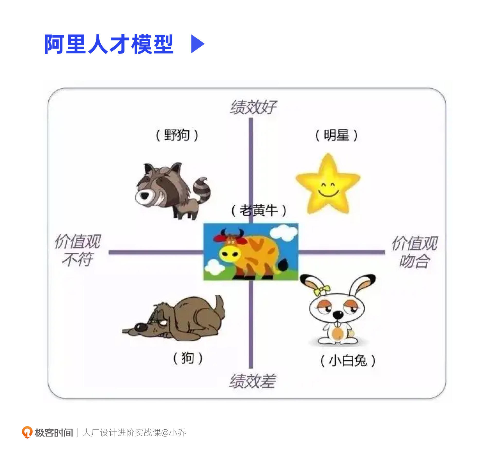

- 00 开篇词 升维思考，是设计师有效成长的第一步.md
- 01 业务周期：0-1-10-100-N的发展策略.md
- 02 商战模式：如何在商业竞争下突出重围？.md
- 03 市场洞察：如何找寻差异化撬动支点？.md
- 04 用户洞察：不懂用研的设计师不是好职场人.md
- 05 用户画像：是形式主义还是真的有效？.md
- 06 用户旅程：挖掘不同用户的核心机会点.md
- 07 职场晋升：看懂晋升的“游戏规则”.md
- 08 设计价值升级：五层进阶突破成长.md
- 09 基础价值 核心三原力：如何将需求转化为设计稿？.md
- 10 基础价值 第一性原理：从问题本质解决问题.md
- 11 基础价值 设计复盘：只是量化设计结果吗？.md
- 12 二级价值 负向网兜：如何全面发现负向问题？.md
- 13 二级价值 设计自驱：如何做好项目Owner？.md
- 14 二级价值 自驱合作：如何反内卷处理合作关系？.md
- 15 三级价值 增长误区：思维惯性陷阱和虚荣数据.md
- 16 三级价值 用户增长历程：AARRR是万能的吗？.md
- 17 三级价值 产品增长：如何做好产品创新？.md
- 18 三级价值 运营增长：如何自驱营销活动和投放？.md
- 19 三级价值 品牌增长 抢占心智，赢得人心红利.md
- 20 三级价值 增长实操：如何“步步为营”推动落地？.md
- 21 四级价值 L型赋能：让T型人才发挥更大价值.md
- 22 四级价值 “网状对比”解决共性痛点.md
- 23 五级价值 商业画布：设计师可以担任业务方吗？.md
- 24 五级价值 共创洞察：如何做好一次完善的workshop？.md
- 25 五级价值 领导力觉醒：写给新晋管理者.md
- 26 工作选择（上）：2B or 2C设计师？如何规划领域？.md
- 27 工作选择（下）：大厂 or 小厂？如何选择赛道？.md
- 28 人才地图：认知自我，成为高潜力人才.md
- 29 成长历程：如何从设计小白成长为团队负责人？.md
- 30 冰山模型：如何成为让面试官欣赏的“面霸”？.md
- 31 作品集指导：什么是面试官喜欢的作品集？.md
- 用户故事 什么是职场设计师进阶的正确姿势？.md
- 结束语 突破自我，成人达己.md
29 成长历程：如何从设计小白成长为团队负责人？
你好，我是小乔。
在本模块的前面三节课，我们“外观”了行业的变化，也“内省”了自身的能力、发展规划和在团队中的定位。在之后的三节课中，我们一起来聊聊设计师的成长路径，掌握面试和作品集的要领，拿到好offer。
有许多设计师小伙伴会和我说：“怎样可以和小乔姐姐一样优秀呢？我想和你走一样的路线。”其实优秀这个词很难界定，要看和谁对比。成长路线也不一定和我走相同的路，而是应该根据自己的情况判断。
在成长的过程中，路径固然重要，但更重要的是获得达成目标的素养。这些素质和能力，才是我们工作多年，从职场中获得的最大价值。也许你用这些积累的能力和素质，成就一番自己的事业，要远比一直在企业的我更加优秀。
这节课，我将以我自己和朋友们的经历，和你聊聊互联网小白想成长为团队管理者需要哪些素养，也希望我们的血泪史可以让你更快成长。能充分吸收这节课的你，一定可以事半功倍。
我的成长路径
先简单聊聊我个人的成长经历，也许你会发现我们遇到过一些相同的困惑，我的经历也许可以带给你一些启发。我把经历分为学习期和职场期两个阶段。
学习期
在学习期，我经历了两次工作和留学之间的选择。第一次是在本科期间，我拿到了5所国际顶级院校的offer，也拿到了华为的校招offer，但那一年是岗位很少的“就业小年”，于是我放弃了留学，选择在华为工作。第二次是在工作近两年时，我的父母再次提出了留学读研的建议，他们认为，眼界和认知比其他东西更为重要，因此，我最终选择了出国。
留学的经历对我来说极其必要，当时国内的教育不够完善和科学，形式主义居多，国外的设计学科教育会更为体系，与我们现在在职场中推导设计方案的逻辑更为一致。除了专业学习以外，在国外的很多所见、所闻、所感，也都开阔了我的眼界，对于我现在做出海业务有很大帮助。
有许多设计同学问过我，是否建议出国留学。这个问题的关键点在于，我们要思考出国留学的目的是什么。如果你已经工作多年，但想学习完整的设计知识，或者想通过留学来“镀金”，其实并不是很有必要。
近几年国内的设计学科教育已经和国外对齐，我们十几年前出国有“镀金”的作用，这几年出国留学已不再有稀缺性。当前行业中，企业看中的还是我们的能力、素养和工作经验，所以留学不是必要项，根据行情的变化选对行业赛道、拓展硬实力与软实力，对职业的发展更为重要。
如果你还是学生或者工作没多久，想提升跨国认知和谈资，或是想更换专业，留学确实是个不错的选择。在学习之余，也可以考察当地的民情和文化，作为一次沉浸式调研。如果你未来在职业道路上想要深耕出海赛道，留学生确实会更容易被优先录取。
因此，我们在作出选择时，不要盲从跟风，因为每一个人的成长路径都是不同的。选择的重点，在于我们清楚自己的目标，打破自己的认知和信息差，从而建立自己的竞争优势。
职场期
留学回国后，我在华为前老板的推荐下进入了一家咨询公司，这段咨询行业的经历让我具备了商业和设计策略思维。也是因为这段经历，我除了能带领UX和创意团队以外，也有能力带领用研团队和品牌团队。
虽然在咨询行业对接了不少知名的KA客户，咨询工作也能满足我接触各种行业的好奇心，但我依然想转行去甲方互联网公司看看，想更完整地跟随业务的落地、迭代和二次增长，而非一直停留在战略层面。
在互联网行业中，我的选择是先在最为核心的大厂、部门、团队中工作，完整地知晓行业的人才标准、设计标准、合作方式、推进规则等，升维认知。而后再转向创业公司或创业团队，将自己积累沉淀的能力充分发挥，降维打击。
这是最好的成长路径吗？它适合我，但也许不一定适合你。还记得我们讲过的成长目标吗？我们的成长路径、选择，都需要符合我们对自己的成长规划。我也想和你聊聊我朋友们的路径，你会发现大家的路径都不一样，但是都在各自的道路上获得了成功。
我有许多好朋友，他们并没有选择去核心业务，一开始就去了大厂的边缘业务或创业团队，业务处于我们之前讲过的引入期和成长期。他们在这些部门可以充分发挥自己的能力，和业务方共创，并非只是一颗画图的螺丝钉。在我们都还是年轻设计师的时候，他们的晋升速度往往会更快一些。
除了在大厂中一步步成长以外，我也有许多朋友选择了创业。他们没有在企业里工作过一天，从毕业开始就在创业了。还有朋友仅在百度、阿里等大厂工作过1-2年，级别也只是P5设计师，但现在都在创业，担任CEO，做我们讲过的三个核心赛道，每年也都有可观的盈利。
快速成长的素养
看完这些经历，你也许会觉得，随着工作年限的积累，能力是否自然就会得到提升？也能顺其自然获得晋升？其实并非如此，有大把的设计师在工作8年、10年后依然处于P6的能力状态，甚至遭遇了行业的淘汰。在职场中想要获得有效成长，是需要对游戏规则“开窍”的。
以我自己来说，我的性格十分认真、操心，在周末都会主动加班思考项目解法。但我在年轻时，晋升速度一般，绩效也只是中等或者中上等。我的许多高管朋友们，和我的情况也很相似。在年轻时，晋升速度甚至要比我慢不少，但在后期都是一年晋升一级，打了一场又一场漂亮的大仗。
也许你和曾经的我们一样，努力认真却没有获得足够的回报。别担心，开窍也许需要时间，也许只是一瞬间。这节课，我集中提炼了快速成长最重要的4点认知，希望可以帮助你少走许多年的弯路。
认知1：当“明星”而非“老黄牛”
许多年轻设计师，和我曾经一样，以为认真努力就一定可以取得晋升涨薪。但认真勤奋其实在大厂环境里，是人人都具备的素质，它并不会带来额外价值。
我是一个传统意义上的学霸，在学生时期就年年拿奖学金，带队获得了不少国际奖项，也擅长辅导他人。但我的认真勤奋和领导力特质，并没有在我年轻的时候帮助我快速晋升。如果你和当时的我一样，认真踏实，但眼界只限于自己的一亩三分地，可能也正经历着我当时的困惑。
我一直认真努力地当着螺丝钉，直到在阿里的第二年，我才终于对“职场游戏规则”开窍。我观察到许多没有我认真负责的同学，他们绩效很高，并且能够快速晋升。于是我就开始分析，为什么别人7点下班，但是绩效却可以很高，晋升也很快呢？
当时的我，因为不善言辞，也不敢找老板交流，就在网络上查阅人才管理方面的知识，然后接触到了一个阿里内部的人才模型。这套模型和我们上节课讲过的人才九宫格逻辑相似，来自于杰克·韦尔奇的管理智慧。阿里的绩效考核，一半考核业绩，另一半要考核价值观。最终考核成绩会归为5个档：明星、牛、小白兔、野狗、狗。
“明星”就是业绩和价值观都得高分的同学，可以委以重任，探索创新业务；“牛”是业绩和价值观都达标的员工，是企业里的大多数；“狗”是业绩和价值观都不达标，需要被“杀”掉；“小白兔”是价值观很好但没业绩，需要给予锻炼和提升的机会，但给两次机会后业绩还不达标的也需要被“杀’”掉；“野狗”是业绩很好但价值观不达标的，是最危险的，需要毫不犹豫的“当众枪毙”。

价值观，反映了每家公司的企业文化和职业素养。虽然每家企业文化不同，但大致来说就是要求员工在职场中有良好的品行。
绩效，正如我们之前讲过的底层逻辑，高绩效是与平级对比出来的。即便我们把自己的项目耕耘得收获满满，也不一定可以获得最高绩效，因为这亩地本身也许并不在高绩效范围内。无论我们再怎么认真，把它完成得再好，也只能获得中等或中上等绩效。
年轻时期的我其实正是“老黄牛”的角色，并不在“明星”队列中，这也是机会平平，不管多认真，绩效都只是中上等的原因。“老黄牛”以支持业务为主，而“明星”是用来给设计团队争取更大价值的，会承担更有挑战和难度的项目。
因此，我们不能埋头苦干，需要获得并表现出“明星”员工该有的能力，主动规划或者向主管申请更有挑战的高绩效项目。在完成普通项目的基础上，如果还能攻克更重要的项目，高绩效自然会青睐于你。
认知2：上层思维，有效沟通
上进的同学都想成为“明星”员工，这就需要我们具备上层思维，并和自己的主管有效沟通。这一点，也是我个人开窍的核心原因。
上层思维，就是可以站在主管的角度思考问题。一方面是快速提升自己的认知，打开眼界，不仅限于自己的一亩三分地，而是从整个团队的角度去思考机会点；另一方面，就是主动找主管聊，更加明白TA在想什么，TA想要什么。我们之前讲过，在我刚入职到现在的公司时，我团队的同学主动来问我，有什么项目她可以帮忙，这就是获得上层思维的方法。
当年轻时期的我意识到问题后，就开窍了。我会经常总结经验分享给同事们，收集行业动向告知我的主管，主动规划更有价值的项目，让自己的性格逐渐外向，不惧怕沟通。比我高级别的同学开始反过来找我讨论项目，主管也和我聊了晋升的规划。
我们在之前的课程中反复强调，做好自驱规划，绘制自己的能力平衡轮，主动找主管沟通。这些能提升我们工作能力和项目价值的交流，都是有效沟通。
认知3：格局打开，走在前沿
我们在上节课讲过高潜力人才，在之前也讲过硬实力和软实力。我任职过的几家互联网公司，都在强调“向前一步”“打破边界”。这些都是在强调打开格局和眼界，走在行业的前沿。
也许有同学会觉得，设计师为什么要懂商业和用户思维？为什么要有产品sense？那不是在卷产品经理吗？这个思维其实并不健康，也很危险。
一方面，随着行业的发展，对各职能的要求每一年都在提升。在我工作5年时，行业对设计师的要求，已经是目前对工作2-3年左右的设计师的要求。所以和大厂的要求对齐是十分必要的，这样不会离行业要求越来越远。有许多同学在行业紧缩时被裁员，正是因为自己的能力已经与公司和行业的要求不匹配了。
另一方面，自驱的设计师也并不是在卷产品经理。有产品思维和设计策略的设计师，才是能做好设计的人才，这些都是设计师本来就该具备的能力，早就不只是对产品经理的要求了。我们在反内卷一课中也讲过，设计行业强调自驱，并不是去抢别人的项目，而是主动提出机会点，与业务方共创，前置设计师参与项目的角色，达成共赢。
认知4：皮实抗打，乐观蛰伏
最后一点，是许多大厂都会强调的一种员工素质——皮实。这看似是鸡汤，但却是向上成长的必备素养。
虽然大家的成长选择和路径都不同，但没有人是一帆风顺的。我在几家大厂接受到的文化熏陶中，“拥抱变化”是最高频被提到的一个。因为互联网行业发展太快，组织架构会经常调整，每天都有许多业务立项，也有许多业务被裁撤。
我听过许多设计同学的遭遇，刚与主管、团队、业务方建立起信任，主管刚刚允诺明年给晋升，但因为组织架构突然调整，被转到了其他部门，更换了其他主管，又需要重新建立信任，晋升计划也被推迟。我还有许多总监朋友，曾经带50人、100人的团队，但因为政策调整，现在不再带人，或者团队被缩减为个位数。
但这些遭遇，对于职场成熟度高的同学来说，其实并没有什么大不了。因为行情总会有所变化，但大家在积累的，正是在一团乱麻时找到线头、重新梳理的能力。皮实乐观，才不会因为一时的现状迷茫，毕竟每一段经历的优势都可以被沉淀，在相应的阶段发挥出巨大能量。
俞敏洪老师如果不够皮实，就无法在“双减”政策的打击下，在无人观看的直播间坚持大半年，最终迎来了东方甄选的成功。他将自己的教育情怀充分渗透给主播们，让知识在直播中成为了核心竞争力。
拼多多的创始人黄峥，2007年从Google离职后开始创业，先后创立了电商代运营公司和游戏公司，两次创业都以失败告终。在2015年4月，他整合了之前电商和游戏的经验与资源，创立拼好货，开创了社交电商的新模式。
再说说我身边的案例，我有好朋友在2022年遭遇了裁员，他也惶恐过，但现在已经把自己打造为设计行业的IP博主了；我也有朋友在大厂中不得志，觉得企业束缚了她的成长，她想到了好的创业方向，并拿到了融资，潇洒地离开了工作多年的大厂。
没有一蹴而就的成功，这些能力，都是在过往一点一滴积累下来的。级别、薪资、团队的管幅、企业的兴衰，其实都是一时的。我们从职场中获得的最大报酬，就是各项素质和能力，这些收获，就注定我们会获得成功。
今日小结
今天，我与你分享了我和朋友们的职场经历，也许只是故事，也许可以带给你启发。我们要明白的是，每个人的成长历程都是不同的，关键是了解自己的成长目标，制定适合自己的规划。
认真努力并不是我们在职场中的差异化能力，想要获得快速成长主要依赖于4个职场认知：
认知1：要成为“明星”而非“老黄牛”。认真努力是优异的品质，但不要仅限于自己的一亩三分地，要以开放的心态去观察和吸收他人的优点。
认知2：培养上层思维，和主管有效沟通。站在主管的角度思考问题，站在团队的利益层面去思考机会点，与主管建立有效沟通。
认知3：格局打开，走在前沿。不要沉溺在过往时代对设计师的要求里，应当与时俱进，走在行业前沿。发挥主观能动性，成为高潜力的人才。
认知4:：皮实抗打，乐观蛰伏。没有人的成长经历是一帆风顺的，成长的代价就是疼痛和肌肉撕裂，唯一不变的就是变化，负面条件往往也意味着更大的机会。
我们所有的过往，终将迎来能量爆发的一天。
互动时刻
回顾你过往的工作，是否认真踏实，努力加班，却始终绩效平平？在这4个可以快速成长的认知中，哪一个是你目前需要尽快补足的呢？
欢迎把你的经历和思考在留言区分享出来，与我和其他同学一起探讨。我们建了一个读者交流群，欢迎你的加入！如果你觉得有所收获，也欢迎把文章分享给你的朋友一起学习。我们下节课见。
© 2019 - 2023 Liangliang Lee. Powered by gin and hexo-theme-book.